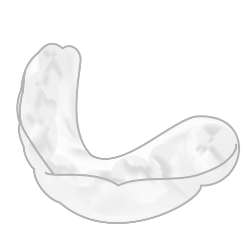

ホワイトニングとは
ホワイトニングとは、過酸化水素や過酸化尿素から成る薬剤を使って、歯を白く漂白する歯科処置です。歯のクリーニングとは異なり、歯質の内部に沈着した汚れを取り除くことができます。歯科医師の指導のもとでしか受けることができない処置だけに、歯を白くする効果は極めて高くなっています。
ホワイトニングがおすすめの方

ホワイトニングの種類
ホワイトニングは、「ホームホワイトニング」と「オフィスホワイトニング」の2つに分けることができます。ホームホワイトニングは、患者さまご自身がご自宅で行う方法で、オフィスホワイトニングは、歯科医院で施術を行います。 当院では、患者さまがお好きな時に気軽に歯を白くすることができるホームホワイトニングを行っております。
ホームホワイトニングの特徴
ホームホワイトニングには、以下に挙げるような特徴があります。
- 色の後戻りが少ない
- オフィスホワイトニングよりも安価である
- マイペースに歯を白くすることができる
- 歯科医院に通う手間が省ける
- オフィスホワイトニングよりも即効性に劣る
- 時間をかけてじっくりと歯が白くなる
当院のホームホワイトニング

当院では「Opalescence オパールエッセンス」というホワイトニング剤を取り扱っております。オパールエッセンスは、密着性の強い粘度力が特徴のホームホワイトニングです。一般的なホワイトニング剤で起こりやすい「トレーから薬剤が漏れる」といった心配が少なく、歯の内部の着色をより効果的に除去することが可能です。 ホワイトニング剤を使用することで、歯の内部の着色成分に働きかけ、効率的かつ安全に歯を白くすることができます。オパールエッセンスは日本で認可を受けていることはもちろんのこと、米国歯科医師会にもその安全性が認められたホワイトニング剤であることから、世界的に普及率の高いホワイトニング剤です。